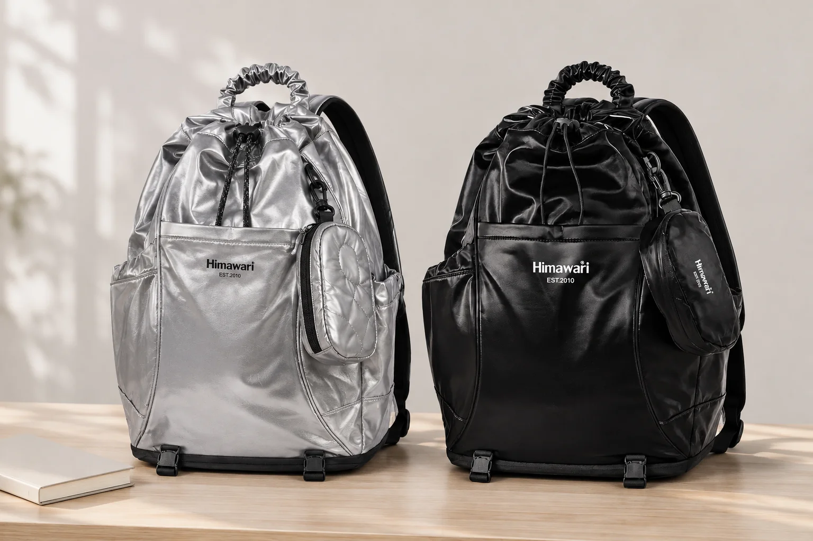
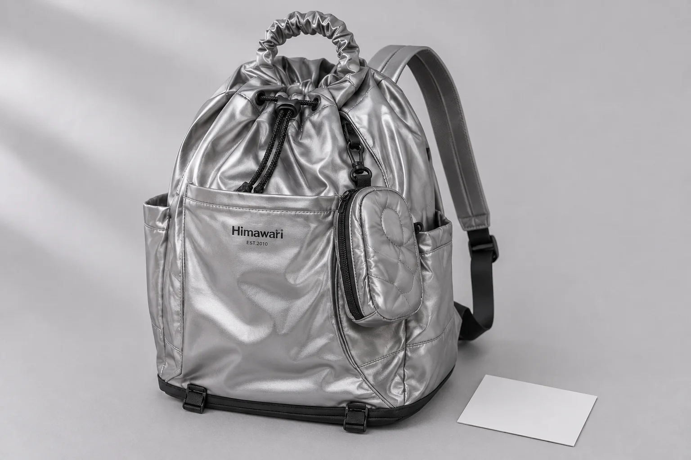
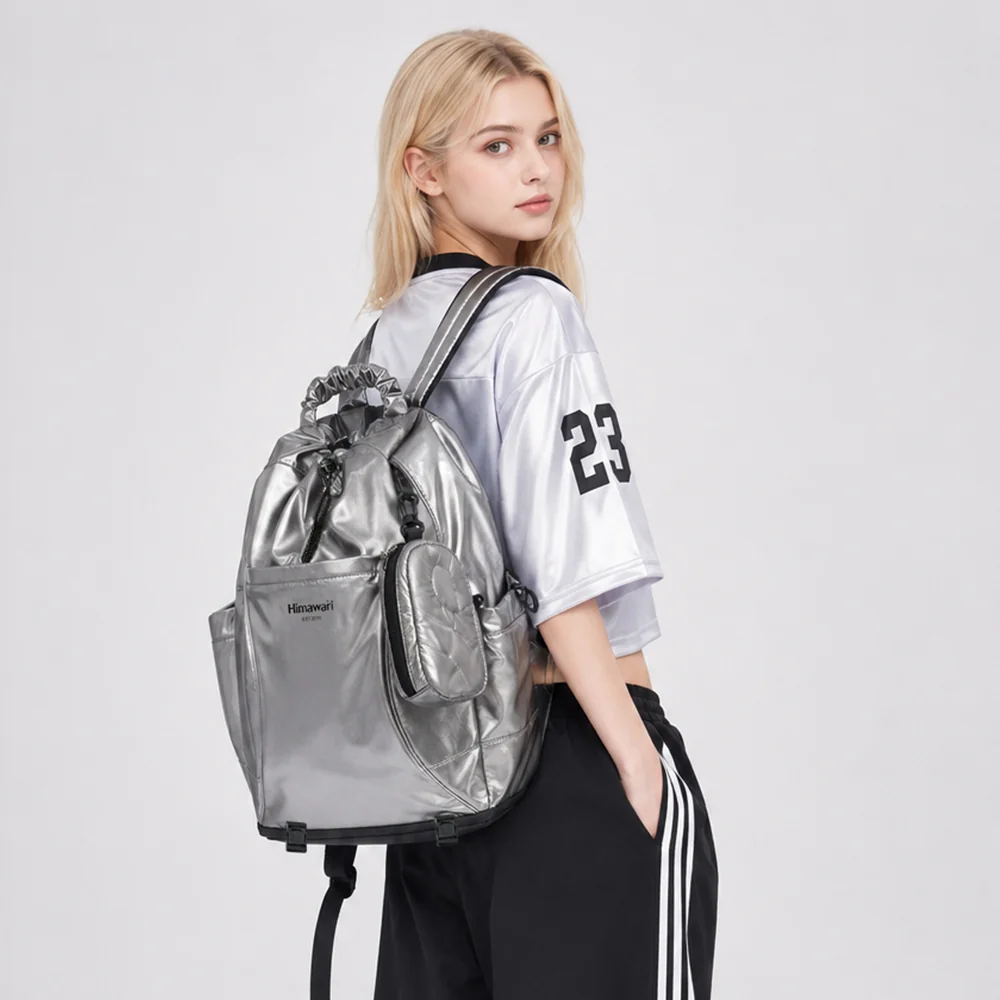

같은 백팩도 색상에 따라 무게가 다를까

마음에 드는 백팩에서 마지막으로 색만 고르면 된다고 생각했는데 옵션을 바꾸자 무게도 달라집니다. 같은 품번이면 크기와 무게가 모두 같아야 할까요. 색상 선택 화면에서는 사진뿐 아니라 선택한 옵션에 딸린 사양을 다시 읽을 이유가 있습니다. 같은 가방 이름 아래에 어떤 정보까지 공통으로 안내되고 어떤 값은 색상마다 따로 적혀 있는지 살펴보겠습니다.
히마와리 No.0515는 이 차이를 확인할 수 있는 사례입니다. 현재 공개 제품 정보에서 실버는 750g, 블랙은 850g으로 안내합니다. 두 옵션의 외부 크기는 가로35 × 세로46 × 폭18cm로 같습니다. 이 글의 숫자는 공개 사양을 옮긴 것이며 사진 속 두 가방을 저울로 재어 얻은 값은 아닙니다. 두 색을 나란히 놓은 AI 연출도 표기 차이를 설명하는 자료로 봐 주세요.
비교표에서 같은 칸과 다른 칸
두 옵션을 한 줄로 줄여 적으면 No.0515, 35 × 46 × 18cm까지는 겹칩니다. 여기에 무게를 하나만 붙이려 하면 값이 갈립니다. 실버의 750g을 모델 전체의 대표 무게로 적으면 블랙을 고를 때 100g의 차이를 놓칩니다. 반대로 850g으로 통일하면 실버에 안내된 값을 바꿔 쓰게 됩니다. 품번이 같다는 이유로 색상별 사양을 합쳐 버리지 않는 편이 정확합니다.
외부 크기가 같은 사실은 그대로 남깁니다. 100g 더 무겁다고 적힌 블랙의 가로가 더 넓다거나 몸판이 더 깊다고 해석하지 않습니다. 크기와 무게는 제품표의 서로 다른 항목입니다. 두 옵션 모두 겉감 나일론, 안감 폴리에스터로 안내하지만 섬유 이름이 같다는 사실 역시 완성품 무게가 같아야 한다는 조건은 아닙니다. 공개된 항목끼리 맞춰 보고 그 밖의 구조는 따로 확인합니다.
노트에 비교 내용을 남긴다면 모델명 옆에 색상명을 먼저 적어 보세요. No.0515 실버 750g과 No.0515 블랙 850g처럼 한 줄에 연결하면 나중에 사진을 바꿔 보더라도 어느 값인지 알 수 있습니다. 사진은 실버를 저장하고 숫자는 블랙에서 가져오는 식의 섞임을 줄이는 방법입니다. 다른 크기의 모델과 비교할 때에도 이 두 줄을 각각의 후보로 남길 수 있습니다.

100g의 차이가 말하지 않는 것
850g에서 750g을 빼면 100g입니다. 킬로그램으로 적으면 두 옵션은 각각0.85kg과0.75kg이며 차이는0.1kg입니다. 단위가 달라져도 비교하는 값은 같습니다. 숫자가 작은 단위로 표시됐다는 이유로 차이가 사라지지는 않습니다. 다만 이 계산은 공개된 제품 중량끼리 뺀 결과이며 각 실물의 무게를 보증하는 개별 측정 기록은 아닙니다.
이 차이만으로 블랙에 특정 보강재가 더 들어갔다거나 실버의 표면 처리가 더 가볍다고 설명할 수는 없습니다. 이번에 확인한 사양에는 원단이나 부품을 나누어 잰 중량이 없습니다. 사진에서 반짝이는 정도를 보고 차이의 원인을 채워 넣지 않습니다. 색상별 완성품 수치는 확인했지만 그 수치가 달라진 제작상의 이유는 확인하지 못했다는 구분을 유지합니다.
앞에 연결된 작은 파우치도 질문에 포함할 수 있습니다. No.0515의 실제 사진에는 몸판 앞쪽에 작은 파우치가 걸려 있습니다. 제품표의 무게가 어떤 구성까지 포함하는지 세밀하게 비교하고 싶다면 그 범위를 문의해야 합니다. 파우치를 떼면 100g 차이가 없어질 것이라고 계산하거나, 사진 속 부속품의 크기만으로 무게를 추정하는 방식은 쓰지 않습니다.

무게가 우선인 선택과 색이 우선인 선택
가방을 고를 때 빈 무게가 가장 중요한 사람이라면 두 색의 차이를 후보 선정에 반영할 수 있습니다. 같은 품번 안에서 색을 바꾸는 선택도 중량 비교가 되는 셈입니다. 그렇다고 실버를 멨을 때 무조건 편하다거나 블랙은 오래 들기 어렵다고 결론 내리지는 않습니다. 착용 판단을 하려면 실제 짐과 어깨끈이 놓이는 자리, 손에 드는 구간을 함께 보아야 합니다.
블랙의 색감이 더 마음에 든다면 확인된 850g을 받아들일 수 있는지 판단합니다. 무게를 우선해 실버를 고르는 경우와 외형 취향을 우선해 블랙을 고르는 경우는 서로 다른 선택입니다. 어느 쪽이 합리적이라는 순위를 미리 정할 필요는 없습니다. 중요한 조건을 하나 골랐더라도 다른 항목의 값을 지우지 않고 알고 선택할 수 있으면 됩니다.
이 글에서는 짐의 무게를 가정해 총량을 계산하지 않습니다. 비교하려는 대상이 같은 품번의 두 옵션이기 때문입니다. 이미 평소 짐을 잰 기록이 있다면 두 후보에 같은 값을 더할 수 있지만 그 계산 전에 제품표의 색상과 무게를 정확히 연결해 두는 일이 먼저입니다. 가방을 바꾸지 않은 채 선택 화면의 색만 바꿨다고 생각하면 이 출발점이 빠지기 쉽습니다.
주문 직전에 남길 옵션의 이름
색상을 정한 뒤에는 상세페이지와 선택한 옵션의 이름을 함께 확인합니다. 대표 사진에 실버가 보인다고 현재 선택도 실버라는 뜻은 아닙니다. 장바구니나 주문 화면에서 모델명과 색상명이 어떻게 표시되는지 읽고 자신이 비교 메모에 적은 후보와 맞춥니다. 가격이나 재고는 그때의 실제 선택 화면에서 확인하며 이전에 저장한 화면을 현재 상태로 대신하지 않습니다.
공개 사양이 나중에 바뀌거나 가진 가방의 표기와 다르다면 우선 모델과 색상, 확인한 자료를 함께 제시해 문의할 수 있습니다. 작은 차이를 직접 측정하고 싶어도 서로 다른 구성을 잰 값을 바로 비교하지 않습니다. 같은 부속품을 단 상태인지, 안에 물건이 남아 있지는 않은지처럼 측정 조건이 같아야 할 이유가 있습니다. 이 글의 750g과850g은 계속 공개 사양이라는 출처를 붙여 읽습니다.
No.0515의 두 색에서 확인한 것은 같은 외부 크기와 서로 다른 공개 무게입니다. 같은 품번 안에서도 색상별 정보가 따로 안내될 수 있으므로 마음에 드는 색을 고른 뒤 그 옵션의 사양을 마지막으로 다시 보세요. 비교 메모에 색상명을 남겨 두면 나중에 다른 가방을 살펴볼 때도 어느 후보의 숫자를 들고 있는지 알기 쉽습니다.